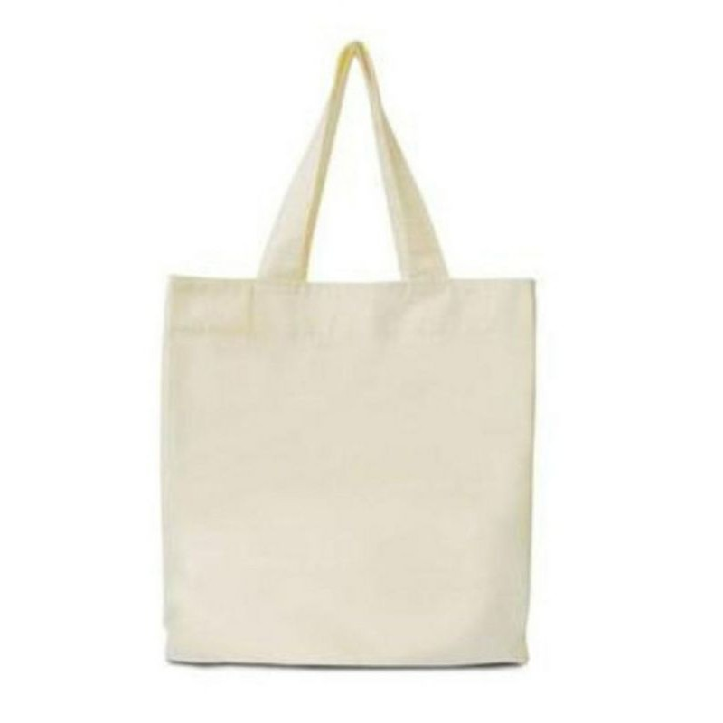

Garrafa Sustentável 750ml
Garrafa ecológica feita com material 100% reciclado, ideal para uso diário! Mantém a temperatura da bebida por até 12 horas e contribui para a preservação do meio ambiente.
- Capacidade: 750ml
- Material: Plástico reciclado
- Isolamento térmico
- Cor: Verde